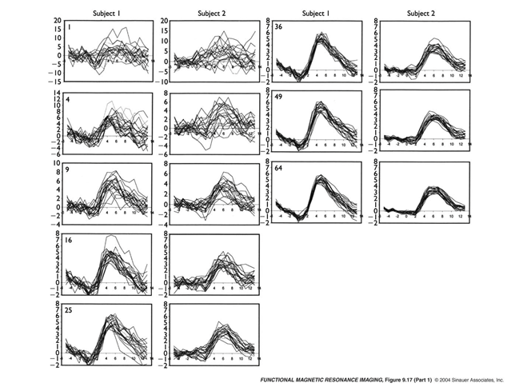

Chapter 7 The magic of averaging
central limit theorem signal-to-noise ratio estimation
[** Very brief post about averaging]
In biological systems (and many others) we often deal with very noisy data. When first handling this type of data people are often confused with the following fact: Data from a single trial might (appear to) be “meaningless”. The same thing can be even said for data for a single participant – even when averaging trials within participant. For example, we rarely if ever will look at an individual’s fMRI data; it’s just too noisy (N.B.: this might appear contradict another post but it doesn’t.).
Consider the figure below with fMRI responses to a brief stimulus. These are shown for two subjects (separately), for individual trials (labeled “\(1\)”), for averages of \(4\) trials (“\(4\)”), and so on. The single trials are a complete mess and look like noise! If you looked at one, or a few, you might think that the situation is hopeless.

But with the beauty of the central limit theorem and the law of large numbers we see that the underlying shape is there with as few as \(16\) trials, and clearly with \(64\). And the standard deviation at the peak decreases with the \(sqrt(N)\) trials, so there are diminishing returns after some point.
Conclusion: don’t be afraid when your data looks messy around the mean…